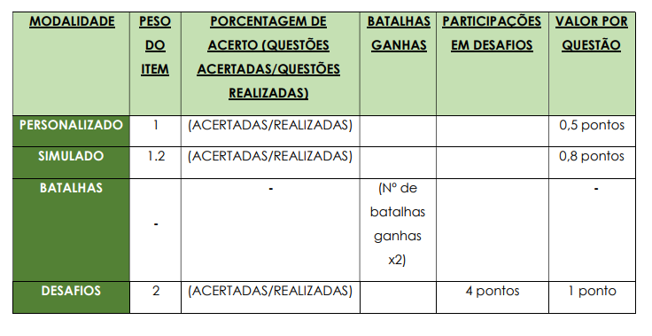

Este “Termo de Uso” disciplina a relação contratual entre a QUIZMED e você, usuário, estabelecendo os direitos e deveres de cada um, além de trazer orientações sobre o uso da plataforma, suas funcionalidades e o serviço prestado. Esses Termos são válidos para todos os membros devidamente cadastrados na QUIZMED. Ao navegar, se cadastrar, adquirir ou utilizar serviços da QUIZMED, o usuário confirma que leu e compreendeu estes Termos, bem como concorda em respeitar, cumprir e estar vinculado, enquanto durarem os serviços, aos seguintes Termos de Uso e Condições da QUIZMED. Acrescenta-se ainda que a disponibilização de novos recursos ou serviços estará também sujeita ao presente Termo e a Política de Privacidade da QUIZMED. A negação desse instrumento, portanto, implica na impossibilidade da utilização dos nossos serviços, uma vez que, para realização do cadastro, é imprescindível que o usuário compreenda e concorde com o aqui disposto. Ressalta-se também que toda e qualquer comunicação entre a QUIZMED e você será realizada através do “e-mail” indicado no cadastro. O “e-mail” será considerado entregue, independentemente de desatualização, eventuais erros ocasionados pelo servidor ou pela empresa responsável pelo seu e-mail. A QUIZMED poderá ser referida como “nós”, e o usuário como “você”.
A QUIZMED (QUIZ ORTOPEDIA TECNOLOGIA E ENSINO LTDA – CNPJ nº 35.186.298/0001- 50) é uma empresa brasileira voltada à educação, que produz conteúdo e informações para estudantes de residência médica, por meio de plataforma virtual direcionada a smartphones (aplicativo).
Ao realizar o cadastro, você terá acesso a provas, questões, comentários e estatísticas no intuito de avaliar o seu rendimento individual, assim como comparar este em relação aos demais usuários, de forma a melhorar seus resultados em provas da sua residência. Desse modo, poderemos descrever como “serviços” a disponibilização de tais provas, questões, comentários e estatísticas com o fito de discorremos o texto com mais praticidade.
A análise do desempenho se dará mediante um “ranking”, que computará automaticamente (em tempo real) a pontuação alcançada pelos usuários da plataforma QUIZMED, observando as seguintes modalidades: personalizado, simulado, batalha e desafio; sendo a pontuação final a soma de todos os pontos alcançados em todas as modalidades. Vejamos:

Exemplo:
Nós queremos que você, através de nossa Plataforma, tenha o acesso a melhor prestação dos serviços acima descritos. Para tanto, podemos verificar a necessidade de alterar/modificar este Termo.
A QUIZMED poderá alterar o presente Termo de Uso, visando sua atualização e aprimoramento, conforme os serviços prestados. Para tanto, a QUIZMED se reserva o direito de, a todo e a qualquer tempo, alterar/modificar o presente documento, comunicando a você através da publicação de nossas atualizações em nosso aplicativo.
Ao aceito este Termo você reconhece que as alterações/modificações entram em vigor, para todos os efeitos, a partir da data da publicação em nosso aplicativo e do uso continuado dos serviços pelo usuário em caso de eventuais alterações, constituindo concordância a estas. Desse modo, caso você não concorde com as modificações/ atualizações, não permaneça utilizando os serviços.
Assim, nós aconselhamos que você verifique periodicamente nossos Termos e Políticas, pois nossas atualizações podem alterar a sua utilização na Plataforma, sendo certo que você terá acesso a versão atual deste documento a qualquer momento em nosso aplicativo.
Você é aconselhado a ler todas as condições contidas em todos os documentos disponibilizados pela QUIZMED, sendo eles, mas não limitados, a Política de Privacidade e o presente Termos de Uso.
Desse modo, não aconselhamos a aceitação de nossos Termos de Uso ou Políticas de Privacidade ou aquisição de nossos serviços em caso de dúvidas relacionadas ao disposto em nossos documentos, as quais devem ser direcionadas ao nosso Suporte através do seguinte e-mail: contato@quizortopedia.com.br.
Assim, caso você não aceite nossos Termos de Uso ou Políticas de Privacidade, não poderemos disponibilizar o acesso aos nossos serviços, vez que tais Instrumentos dispõem de condições imprescindíveis para prestação do serviço pela QUIZMED.
CONDIÇÕES DE CADASTRO E FORNECIMENTO DE DADOS:
Para que a QUIZMED ofereça
seus serviços, é necessário que o usuário realize cadastro na plataforma, devendo fornecer
para tanto os seus dados pessoais, como: nome, data de nascimento, número do CPF,
número do CRM, data de entrada na residência, email, dentre outros. Caso queira verificar
como tratamos seus dados, acesse a Política de Privacidade da QUIZMED ou entre em
contato pelo e-mail indicado nesta.
Lembre-se que toda a nossa comunicação com você se dará através do e-mail indicado em sede de cadastro. Portanto, é seu dever manter todos os dados atualizados para, inclusive, viabilizar a nossa comunicação.
O cadastro poderá ser realizado por qualquer médico residente juridicamente capaz para atos civis, assumindo total responsabilidade, civil e penal pela veracidade e exatidão dos dados informados no momento do cadastro.
Portanto, o fornecimento de informações pessoais possui caráter obrigatório para o funcionamento e acesso à plataforma da QUIZMED, assim como para o fornecimento dos serviços ofertados. Fica vedado ao usuário fornecer informações inverídicas ou de terceiros, sob pena de cancelamento da conta na plataforma QUIZMED ou de não acolhimento do pedido de cadastro.
Nós poderemos utilizar de todos os meios possíveis a nosso critério para confirmar sua identidade, assim como solicitar dados adicionais e documentos que entendemos necessários para a confirmação dos dados informados.
DA PESSOALIDADE/INTRANSFERIBILIDADE DO CADASTRO E DO LOGIN/SENHA:
O
cadastro é único, pessoal e intransferível, de modo que fica sob a responsabilidade do
usuário a proteção do login e senha, essenciais para acesso a plataforma QUIZMED, não
sendo permitido o compartilhamento dessas informações com outras pessoas. Você é o
único responsável por manter sua senha segura, nós não seremos responsáveis por
qualquer perda ou dano decorrente de sua falha ou de falha de terceiros em manter a
segurança de sua conta e senha.
Não serão permitidos cadastros iguais ou a pluralidade de cadastros por um só usuário. Desse modo, constatada a transferência, igualdade ou pluralidade de conta, a QUIZMED poderá efetuar o bloqueio imediato do acesso e da conta, o que será relatado através do envio de e-mail para o endereço eletrônico indicado pelo usuário.
Em caso de cancelamento da conta cadastrada ou de interrupção da prestação de serviços por culpa do usuário, estes não importarão no reembolso de valores eventualmente já adimplidos.
DO PERFIL:
O perfil do usuário da QUIZMED poderá ser composto de nome e foto,
sendo esta última opcional. Nesse sentido, a responsabilidade pela disponibilização do
nome e da foto será integralmente do usuário, sendo vedados apelidos e imagens que
violem os bons costumes e a moral, assim como aqueles que possam ser interpretados
como propaganda político-partidária ou de candidatos a cargos eletivos, incluindo os já
eleitos. Acrescenta-se que não serão aceitos apelidos e imagens que tenham de alguma
forma conteúdo discriminatório ou comercial.
Verificada a conduta pelo usuário, será encaminhado e-mail para que este proceda com a modificação do conteúdo no prazo de até 48 (quarenta e oito) horas, sob pena de cancelamento da conta e sem prejuízo das medidas judiciais cabíveis.
Através do aceite do presente deste documento você reconhece o dever de:
a) Manter atualizado o cadastro e todos os seus dados pessoais, de forma a
viabilizar, inclusive, a comunicação com a QUIZMED;
b) Prestar informações verídicas, abstendo-se de realizar cadastro de terceiros ou
constante de informação falsa ou inverídicas;
c) Zelar pelo login e senha, sendo estes de uso intransferível;
d) Observar a moral e os bons costumes, sendo vedados apelidos e imagens
possam violar, nos termos do presente documento;
e) Utilizar os serviços apenas para finalidade legais e autorizadas, de modo a não
ofender a legislação pátria;
f) Não vender, reproduzir, duplicar, copiar ou explorar, ainda que não
integralmente, qualquer parte do serviço, assim como uso ou acesso deste,
sob pena de cancelamento da conta e ajuizamento das medidas judiciais
cabíveis;
g) Aceitar a Política de Privacidade da QUIZMED disponibilizada em nosso
aplicativo.
DAS RESPONSABILIDADES DO USUÁRIO:
Você é legalmente responsável por todas
atividades e interações que desempenhe através do aplicativo QUIZMED. Além disso, você
também é responsável por confirmar as informações e questões referentes a provas já
aplicadas.
Nós garantimos o bom e adequado funcionamento da plataforma, além do acesso pelo usuário, desde que não observadas as condições tratadas na cláusula VII (quanto a possibilidade de cancelamento unilateral), de forma ininterrupta, com exceção da indisponibilidade por motivos técnicos, manutenções ou qualquer outra circunstância.
A QUIZMED compromete-se a fazer cumprir todas as obrigações dispostas neste Termo, de modo a utilizar a melhor técnica na prestação dos serviços dispostos neste.
O usuário pode, a qualquer tempo, solicitar o cancelamento de sua conta na plataforma da QUIZMED, sendo todos os seus dados excluídos, salvo as hipóteses previstas em Lei e dispostas na Política de Privacidade.
No entanto, a QUIZMED reserva-se no direito de cancelar unilateralmente sua conta, sem necessidade de aviso prévio, nas possibilidades a seguir arrolados:
1. Caso seja constatada qualquer irregularidade no momento do cadastro,
como informação falsa, inverídica ou de terceiros;
2. Caso seja constatado transferência, igualdade ou pluralidade de conta;
3. Caso o usuário haja contrariamente aos princípios da moralidade, ética e bom
comportamento dentro da plataforma da QUIZMED;
4. Caso o usuário desrespeite, de qualquer forma, a legislação ou estes Termos
de Uso dentro da plataforma da QUIZMED.
O usuário deve observar e respeitar todos os direitos de propriedade intelectual relacionados aos simulados e demais materiais disponibilizados no aplicativo da QUIZMED, inclusive direitos autorais, não realizando, permitindo e/ou autorizando a reprodução total ou parcial dos materiais (em meio físico ou eletrônico), sob pena de cancelamento da conta e de adoção das medidas judiciais cabíveis.
Ademais, caso tenha conhecimento de que qualquer pessoa física ou jurídica esteja infringindo quaisquer direitos de propriedade, por gentileza, informe imediatamente à QUIZMED.
A QUIZMED se compromete em garantir a segurança da sua conta e dos seus dados. Para isso, contamos com parceiros confiáveis que tratarão seus dados com a devida proteção necessária, conforme disposto em Política de Privacidade.
Entretanto, nós não nos responsabilizamos por quaisquer danos que terceiros possam causa a sua conta, seja por malwares como vírus, worms e cavalos de troia ou outras formas de invasão online.
Não é permitida a utilização de quaisquer dispositivos, softwares ou recursos que possam interferir nas atividades da QUIZMED, bem como que cause perigo ou ameaça de perigo à plataforma, ao sistema ou ao banco de dados.
Qualquer intromissão ou tentativa que viole a Lei Geral de Proteção de Dados, o Marco Civil da Internet ou qualquer outra legislação cabível, além do disposto no presente Termo, acarretará na responsabilização do invasor, de acordo com as sanções legais pertinentes, sendo ainda responsável pela indenização por eventuais danos causados.
Todos os termos aqui presentes estão em consonância com a Lei Geral de Proteção de Dados (Lei nº 13.709), com o Marco Civil da Internet (Lei nº12.965) e demais legislações cabíveis, inclusive o Código de Proteção e Defesa do Consumidor.
Para todos os assuntos relativos a interpretação e ao cumprimento destes termos, as partes se submeterão ao Foro da cidade de Fortaleza/CE, salvo quando verificado o enquadramento do usuário no conceito legal de consumidor, podendo este submeter reclamações ao foro de seu domicílio.
O usuário tem direito de apresentar reclamação à Autoridade Nacional de Proteção de Dados caso entenda que alguma questão presente no Termo de Uso tenha sido violada.